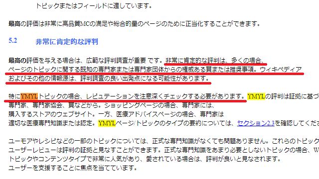
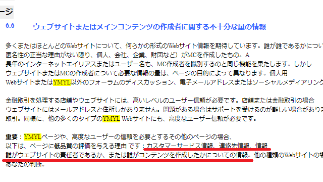

YMYL領域のSEO対策は難易度が高い
サイトのカテゴリーには様々なジャンルが存在します。
当サイトはウェブ制作のジャンルのため、人命や財産に悪影響を与える可能性は低いですが、なかには医療や税務など、サイト上の誤った情報によって健康や財産に被害が出てしまう可能性のあるジャンルがあります。
そのような、人の経済的安定や健康、幸福、あるいは安全に影響を与えるジャンルはYMYL(Your Money or Your Life)と呼ばれています。直訳すると「あなたのお金、またはあなたの人生」になりますが、このYMYL領域のページついては品質の高いコンテンツが必要になります。
Googleの検索品質評価ガイドラインは日本語版は提供されていませんが、PDFのファイル容量を削減した上でGoogle翻訳してみますと、このYMYLに関して以下の記述があります。
当サイト運営者は、健康食品や金融、税金など複数のサイトを運営しておりましたが、上記のYMYL領域に該当してアクセス数が急減したため、これらのジャンルは諦めました。
これらのYMYLジャンルでサイトを作成する場合、専門性や権威、信頼性が重要となり、コンテンツ作成者やサイトの評判なども重要になるため、匿名の個人ブログでサイトを作成しても検索エンジンではヒットしない可能性があります。
そのため、サイトを作成する際、まずはYMYL領域に該当するかを確認してから始めることをおすすめします。
YMYL領域のSEO対策のポイントを「検索品質評価ガイドライン」でチェック
Googleは、外部の検索品質評価者と協力して検索結果の品質をチェックしています。
上記の検索品質評価ガイドラインは、検索品質評価者に対して書かれたガイドラインのため、サイト運営者に対して書かれた指針ではありません。
けれども、Googleの理想がガイドラインの内容とすれば、それに近づくようにアルゴリズムが更新されていくはずですので、その趣旨にあった形でサイトを最適化していくことでSEO対策につなげることができます。
この検索品質評価ガイドラインのPDFは、上記のページからダウンロードできますが、英語版しか公開されていなく、またファイル容量も大きいため、そのままGoogle翻訳にアップロードしても日本語には翻訳してもらえません。
そのため、まずはAcrobatやネット上のPDF縮小サイトを利用し、サイズ容量を縮小してからアップロードして翻訳するとよいでしょう。
特に、「パート1：ページ品質評価ガイドライン」（P8～P68）の箇所については、参考事例なども「新しいタブ」で開いて確認しておくことをおすすめします。
「4.0 高品質のページ」～「8.0 中品質のページ」の箇所にて、最高品質や最低品質などの具体例が紹介されています。特に、YMYL領域では高い品質基準が必要になるため、「4.0 高品質のページ」や「5.0 最高品質のページ」の箇所を重点的にチェックしておくことをおすすめします。
■4.3 明確で満足のいくウェブサイト情報：責任者とカスタマーサービス
例えば、高品質なページの箇所では、YMYLのWebサイトではコンテンツの責任者に関する満足のいく情報が必要との記載があります。
一方、YMYL以外のサイトではメールアドレスだけで十分な場合があるとのことです。そのため、YMYL領域のサイトでは運営者情報を充実させておく必要があります。
■5.2 非常に肯定的な評判
加えて、YMYLトピックの場合、コンテンツを作成した専門家やウェブサイトの評判も関係してきます。

権威ある賞、または推奨事項などとありますが、コンテンツ作成者の経歴や実績なども公開して充実させておくことをおすすめします。
■6.6 ウェブサイトまたはメインコンテンツの作成者に関する不十分な量の情報
また、「6.0 低品質のページ」の箇所でも、YMYLページの場合は「カスタマーサービス情報」や「連絡先」、「誰がウェブサイトの責任者であるのか」、また「誰がコンテンツを作成したかのついての情報」が評価の対象になるとの記載があります。

運営者に関する情報とともに、連絡先のお問合せフォームなどのコンタクト情報も充実させておくことをおすすめします。
■E-A-T（専門知識、権威、信頼性）の量について
また、全体的な概要として「3.0 全体的なページ品質評価」の箇所がありますが、こちらでは以下のような内容があります。
このうち、「ウェブサイト情報/メインコンテンツの責任者に関する情報」とその評判については、上記の通りですが、これよりも前に、Expertise（専門性）、Authoritativeness（権威性）、Trustworthiness（信頼性）のE-A-Tについて重要な要素とされています。
以前、企業がライターに記事を依頼して大量作成し、医療関係で不確かな情報が上位表示されて社会問題となっていた時期がありましたが、このE-A-Tの登場により、専門性や権威性、信頼性がないコンテンツは上位に表示されなくなりました。
具体的にGoogleがE-A-Tをどう把握しているのかは不明ですが、YMYLジャンルで専門知識も経験もないライターが記事を大量に作成しても上位表示は出来なくなっています。
そのような経緯により、そのコンテンツを誰が作成したのか、あるいはサイト責任者は誰かが重要視されるようになったため、最低限、YMYL領域においてはコンテンツ作成者とサイト責任者の情報を充実させた上で、専門的なコンテンツを作成してSEO対策することをおすすめします。